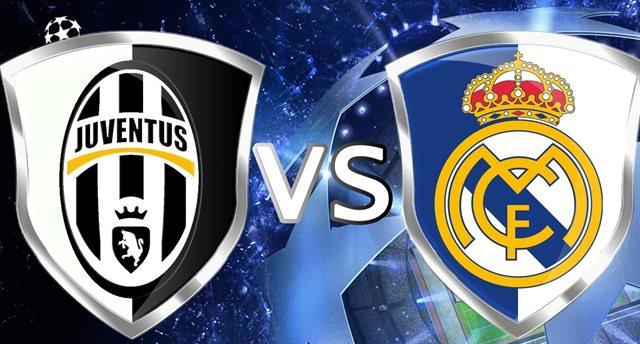

Победитель Лиги Чемпионов 17-18 г.г.
Мадридский «Реал» уже сумел сделать невозможное, став первым клубом, который победил в двух финалах Лиги чемпионов подряд. И вся футбольная общественность затаив дыхания ждет, удастся ли команде Зинедина Зидана снова защитить свой титул и победить третий раз подряд?
Неудивительно, что «Реал» является главным претендентом на победу в турнире — коэффициент на успех мадридцев составляет 4,5. Тому способствовала и победа в Еврокубке и Кубке Короля на старте нового сезона.
Шансы заклятых друзей мадридского клуба — «Барселоны», оцениваются пониже, с коэффициентом 7,5. Последнюю победу каталонцы одержали еще два года назад, а последних два сезона даже не попадали в финал. Но, может быть пришло время вернуть утраченное величие?Финал, в которого сыграют «Барселона» и «Реал» рассматривается букмекерами как наиболее вероятный — коэффициент на такой исход составляет 13,00.
Претенденты
Как ни странно, но победа в Лиге чемпионов туринского «Ювентуса», выступавший в последние годы в двух финалах Лиги чемпионов, оценивается ниже английских клубов — с коэффициентом 15,0. Буффон не молодеет, Бонуччи ушел, хотя приход Блеза Матюиди явно пойдет туринцам на пользу.
А вот шансы «Манчестер Сити» букмекеры оценивают с коэффициентом 10,00. Манчестерский клуб, по мнению букмекеров пройдёт в турнире дальше всех из английских клубов — вероятность этого оценивается с коэффициентом 3,0. Затем «Ливерпуль» (5,50).